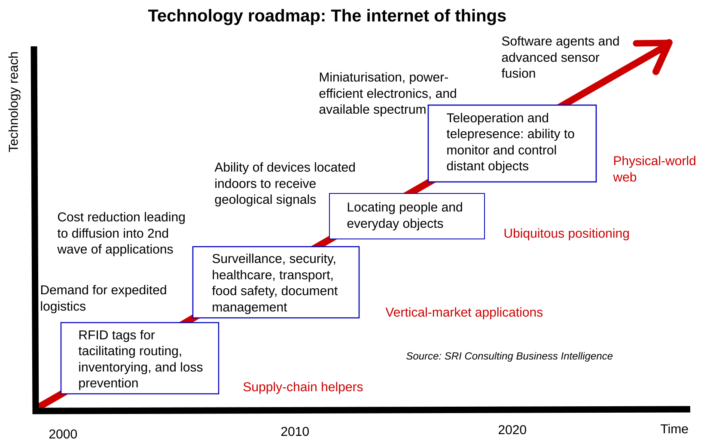
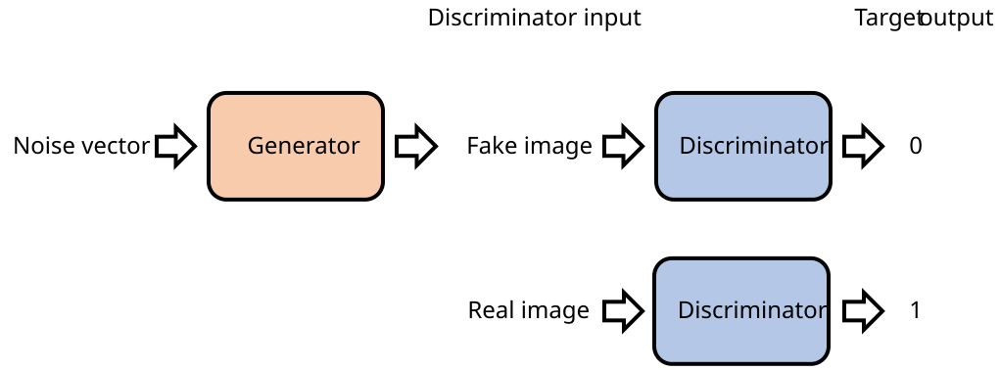

The Future and Your Role
Emerging Technologies and the Future Web
Watch & Learn
- What Is Artificial Intelligence? (Crash Course AI #1, 11 min)
- How It Works: Internet of Things (IBM Think Academy, 3 min)
- How Close Are We to the Perfect Deepfake? (Seeker, 9 min)
- But how does bitcoin actually work? (3Blue1Brown, 26 min)
Video Quiz
In the Crash Course AI video, Jabril explains that AI is not just one thing. What two broad categories of AI does the episode distinguish between?
In the IBM Think Academy video, what does the narrator say is the key ingredient that makes the Internet of Things valuable?
In the Seeker deepfakes video, what technology does the host explain is primarily used to create realistic face-swapping deepfakes?
In the 3Blue1Brown video, what cryptographic concept does Grant Sanderson explain is essential for securing transactions on the blockchain?
In the 3Blue1Brown video, what is “proof of work” and why does it matter for a blockchain?
In the Seeker video, what does the host identify as one of the biggest societal dangers of perfecting deepfake technology?
Theory

Artificial Intelligence on the Web
Artificial intelligence is no longer a futuristic concept — it already powers much of what you see online every day. When you ask a question to a chatbot like ChatGPT, a large language model predicts the most likely next word in a sequence, thousands of times, to form a coherent reply. It doesn’t “understand” the way you do — it recognises patterns in enormous amounts of text.
Recommendation algorithms on YouTube, Netflix, and Spotify use machine learning to study what you watch, skip, and replay, then serve content you’re likely to enjoy. Image generators like Midjourney and DALL-E turn text prompts into pictures using diffusion models trained on millions of images. The results can be stunning, but they also raise questions about copyright, originality, and trust.

The Internet of Things: Smart Devices and Their Risks
The Internet of Things (IoT) refers to the billions of everyday objects — thermostats, door locks, light bulbs, refrigerators, medical monitors — that connect to the Internet and exchange data without a human pressing buttons. A smart thermostat learns your schedule and adjusts temperature automatically. A fitness tracker sends your heart rate to a phone app every few seconds.
The convenience is real, but so are the risks. Many IoT devices ship with weak default passwords, receive infrequent security patches, and collect data that users never agreed to share. In 2016, the Mirai botnet hijacked hundreds of thousands of insecure IoT devices — security cameras, routers, DVRs — and used them to launch one of the largest DDoS attacks in history, temporarily knocking major websites offline. Every connected device is a potential entry point for attackers, so changing default passwords and keeping firmware updated matters more than ever.
Web3 and Blockchain: Hype vs. Reality
A blockchain is a shared ledger where every entry is grouped into a “block,” and each block contains a cryptographic hash of the previous one. Changing any past record would break the chain, making tampering extremely difficult. This is the technology behind Bitcoin and other cryptocurrencies.
Supporters of Web3 envision a decentralised Internet where users control their own data, identities, and transactions without relying on big companies. In practice, many Web3 projects have struggled with slow transaction speeds, high energy consumption (especially proof-of-work systems), confusing user interfaces, and outright scams. NFTs (non-fungible tokens) exploded in popularity in 2021, with some digital artworks selling for millions, only for the market to collapse shortly after. Blockchain has genuine uses — supply-chain tracking, tamper-proof records, cross-border payments — but the gap between marketing promises and real-world adoption remains wide. A healthy dose of scepticism is warranted whenever someone claims a blockchain will “revolutionise everything.”

Deepfakes and Synthetic Media: Seeing Is No Longer Believing
A deepfake is a piece of synthetic media — video, audio, or an image — generated or altered by AI to make it look as if someone said or did something they never actually did. The most common technique uses generative adversarial networks (GANs): two neural networks compete — one generates fakes, the other tries to detect them — and through thousands of rounds they both improve until the fakes become nearly indistinguishable from reality.
Voice cloning technology can now replicate a person’s voice from just a few seconds of audio, producing speech with natural intonation, pauses, and emotion. Combined with face-swapping video, this means a convincing fake phone call or video message from someone you trust is no longer science fiction.
Deepfakes have legitimate uses — film special effects, language dubbing, accessibility tools. But they also enable misinformation, fraud, and identity theft. The best defence is media literacy: always check the source, look for inconsistencies (strange blinking, warped edges, mismatched lighting), and remember that just because a video looks real does not mean it is.
Theory Quiz
What does a recommendation algorithm on YouTube or Netflix actually analyse to suggest content?
Why was the Mirai botnet attack in 2016 so devastating?
What makes changing a past record on a blockchain extremely difficult?
In a generative adversarial network (GAN), what role does the “discriminator” play?
What is the single most important personal defence against deepfakes?
Build: “Deepfake or Real?” Quiz
Create an HTML/CSS/JS page that presents 10 statements about AI capabilities. The user decides whether each one describes real, currently existing technology or an exaggerated/fake claim. At the end, show a score with explanations.
- Display one statement at a time (or all 10 in a list) describing an AI capability or scenario.
- For each statement, provide two buttons: “Real Tech” and “Fake / Hype.”
- After the user answers, reveal whether the statement is real or exaggerated, and show a short explanation of the current state of the technology.
- At the end, display a total score out of 10.
Example statements to include:
- “AI can clone a person’s voice from just a few seconds of audio.” — Real
- “AI can read your mind by analysing your social media posts.” — Fake / Hype
- “AI-generated images have won real photography competitions.” — Real
- “AI chatbots fully understand the meaning of every sentence they produce.” — Fake / Hype
- “Smart fridges can automatically reorder groceries when supplies run low.” — Real
- “Blockchain technology can make any website completely unhackable.” — Fake / Hype
- “AI can generate a realistic video of a person saying words they never actually said.” — Real
- “Self-driving cars can operate perfectly in all weather conditions without any human input.” — Fake / Hype
- “AI systems are used by doctors to help detect cancer in medical scans.” — Real
- “NFTs guarantee that a piece of digital art can never be copied or screenshotted.” — Fake / Hype
Requirements:
- Use an array of objects in JavaScript, each containing the statement text, the correct answer (“real” or “fake”), and an explanation
- Style the “Real Tech” button in green and the “Fake / Hype” button in red
- After answering, highlight the correct choice and show the explanation below the statement
- Disable both buttons after the user picks an answer (no changing your mind)
- Display a final score with a message: 8–10 = “Tech-savvy!”, 5–7 = “Getting there!”, 0–4 = “Keep learning!”
Solve it in JSFiddle:
Open JSFiddlePaste your HTML into the HTML panel, CSS into the CSS panel, and JS into the JavaScript panel. Click “Run” to see the result!